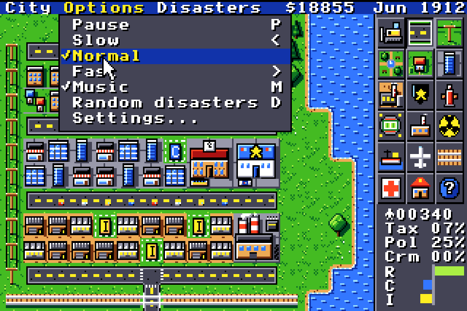
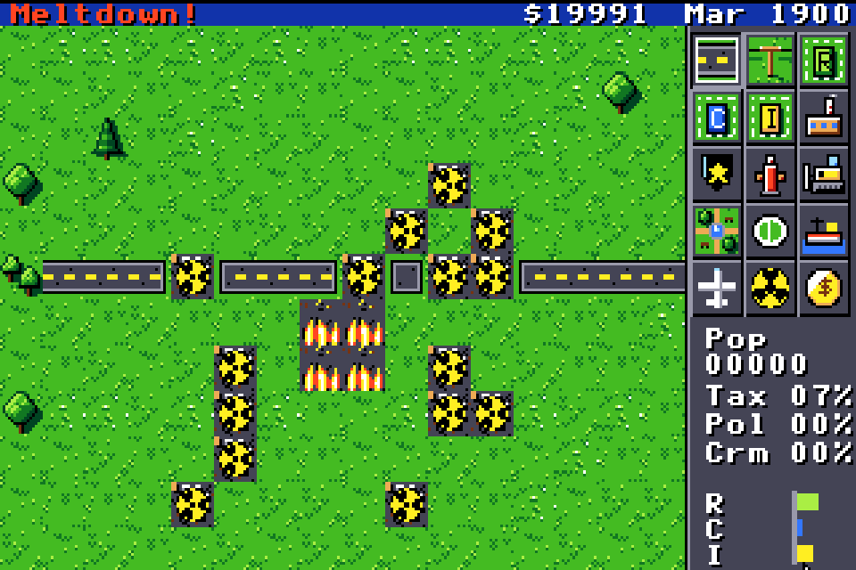
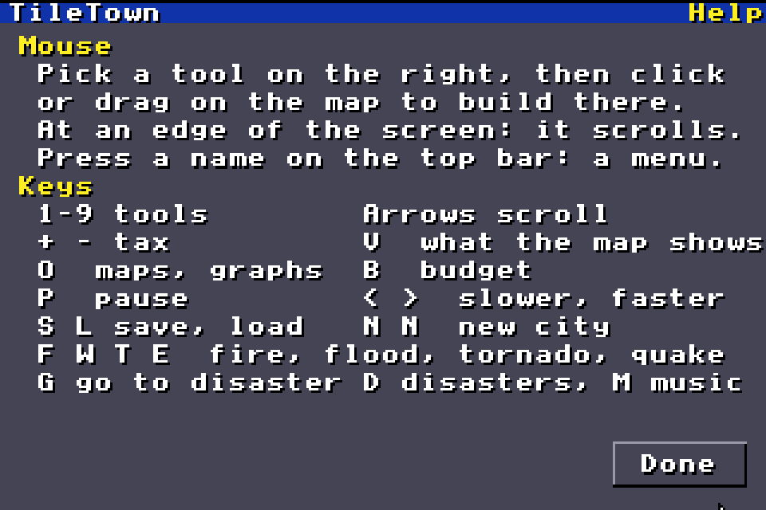

Welcome to the TileTown Home Page!
A city-building game for the Apple IIgs
Last updated: November 9, 2026
What is TileTown?
TileTown lets you build a city on your Apple IIgs, from a few dirt roads to a busy metropolis. You lay out roads and power lines, mark land for homes, shops and industry, and watch your town grow. As mayor you set the taxes, balance the budget and keep crime and pollution down, while fires, floods, tornadoes and earthquakes do their best to undo your work.
It is written from scratch in 65816 assembly for the IIgs's Super Hi-Res screen, with colourful 16-colour pixel art, sound effects and an original soundtrack - eight relaxed tunes - on the IIgs's Ensoniq sound chip.

What's New
- NEW! Play the demo: the whole game for 10 minutes. Download it below!
- NEW! Easy, normal and hard: pick a level on the map chooser with Tab - the money you start with, how often disasters strike, how much high taxes hurt.
- NEW! Runs on 2 MB: tested on a real Apple IIgs.
- NEW! Eight new tunes: relaxed background music for your city, seven voices on the Ensoniq chip, playing in turn.
- NEW! Hospitals, schools and rail: health care and education make land worth more, trains take traffic off the roads.
- NEW! The city evaluation (press A) and the query tool: what is wrong, and what is where.
- Settings in the Options menu: scroll speed, music and sound volume, kept on the disk.
- NEW! A smoother mouse, a bigger cursor frame for big buildings, and tool tips with prices.
- Quit in the City menu (or press Q) takes you back to ProDOS.
- NEW! A menu bar (City, Options, Disasters), pause and three speeds, and a help screen.
- Milestones and advice: your town becomes a city, a capital, a metropolis - and your advisers tell you what's wrong.
- Five goals with a deadline, from Boomtown to Rich town.
- Tornadoes, earthquakes and nuclear meltdowns join the fires and floods.
- Maps and graphs: heat maps of your city and graphs of its history.
- A budget with sliders for taxes, roads, police and fire.
- A new title screen and a friendlier font.
Features
- A living city on a 128 × 128 map. Homes, shops and factories grow in three sizes once they have power, a road and people who want them. Commuters drive from their homes to work and the shops, and home again.
- 16 maps to start on: rivers, lakes, coasts, islands, forests, fjords and marshes, or open plains for an easy start.
- 17 things to build: roads, rail, power lines, three kinds of zones, coal and nuclear power plants, police and fire stations, hospitals, schools, parks, a stadium, a seaport and an airport. Drag a road or power line out over water and it becomes a bridge; lay rail across a road for a level crossing, or string a power line over a road or rail. Trains run on the rails, and rail goes under water in tunnels. Hold Shift to draw straight lines.
- A city evaluation (the mayor's approval, what people say is wrong, a score) and a query tool to look at any square.
- A city with a mind of its own: land value, traffic, pollution and crime spread through the neighbourhoods, and people ask for what the city lacks.
- Maps and graphs: see the whole city at once, or as a heat map of pollution, crime, land value, traffic, police, fire cover, population or power. Graphs show your city over 10 or 100 years.
- A budget with sliders for the tax rate and for roads, police and fire.
- Five disasters: fires, floods, tornadoes, earthquakes and nuclear meltdowns.
- Five goals with a deadline, or free play for as long as you like.
- Three levels: easy, normal and hard.
- Menus, pause and three speeds, a help screen, mouse and keyboard.
- Eight save slots, each city under its own name.
Screenshots
Click a picture to see it full size. (Each is about 30K - fine even on a 14.4 modem!)









The 16 maps

Green Valley, River Bend, Twin Rivers, Lake District, Coast, Bay City, Islands, Peninsula, Forest Edge, Great Lake, Delta, Pine Woods, Marshes, Fjords, Plains and Classic.
What you need
- An Apple IIgs with 2 MB of memory and a drive that can boot an 800K 3.5" ProDOS disk, or
- an emulator such as MAME (on the Mac it comes with Ample), set up as an Apple IIgs with 2 MB.
- A mouse. You can play with the keyboard too, but the mouse is easier.
Your first town
- Build a power plant on open land (fourth row of the toolbox).
- Lay roads: pick the road tool, then click or drag on the map.
- Zone land next to the roads: R for homes, C for shops, I for factories. Every zone needs a road within 2 tiles.
- Bring power: run a power line from the plant to your zones. Zones pass power on to their neighbours. A yellow lightning bolt marks a zone without power.
- Watch the R C I bars at the bottom right: build more of whatever is high.
- Keep an eye on your money, and open the budget (B) now and then.
Keys and menus
| Key | What it does |
|---|---|
| 1 - 9 | Bulldozer, road, power line, park, residential, commercial, industrial, police station, fire station |
| Arrows | Scroll the map (or move the pointer to an edge) |
| + / - | Raise or lower taxes |
| B | The budget |
| O | Maps and graphs |
| V | Show pollution, crime, land value or traffic on the map |
| P | Pause, and play again |
| < / > | Slower, faster |
| S / L | Save / load a city |
| N, N | Start a new city |
| F W T E | Start a fire, flood, tornado or earthquake |
| G | Go to the last disaster |
| D / M | Random disasters on or off / music on or off |
| A | The city evaluation |
| H | Help |
| Q | Quit TileTown (asks first) |
The menus: City (New city, Load, Save, Budget, Maps and graphs, Evaluation, Help, Quit), Options (Pause, Slow, Normal, Fast, Music, Settings) and Disasters (Fire, Flood, Tornado, Earthquake, Meltdown, Go to disaster, No disasters).
What you can build
| Tool | Price | What it does |
|---|---|---|
| Road | $10 | Connects your zones. Over water it becomes a bridge (4 × the price) |
| Power line | $5 | Carries power from the plants |
| Residential zone | $100 | Homes: people move in |
| Commercial zone | $100 | Shops and offices |
| Industrial zone | $100 | Factories: jobs, but also pollution |
| Power plant | $3,000 | Powers up to 60 zone tiles |
| Police station | $500 | Holds crime down around it |
| Fire station | $500 | Fires spread less nearby |
| Bulldozer | $1 | Clears what you built, and rubble |
| Park | $50 | Makes the land around it more valuable |
| Stadium | $3,000 | A town of over 1,200 people needs one to keep growing |
| Seaport | $5,000 | Built by water. Big industry needs one |
| Airport | $10,000 | Big commerce needs one |
| Rail | $20 | Connects zones and takes traffic off the roads |
| Hospital | $1,000 | Needed above 2,000 people; land it reaches is worth more |
| School | $800 | Needed above 3,000 people; land it reaches is worth more |
| Nuclear plant | $5,000 | Powers up to 150 zone tiles |
Goals
Pick a goal on the map chooser with the up and down arrows. At each new year the game checks how you're doing. Win or lose, you can keep playing. Under the goal, press Tab for the level: easy ($30,000 to start, disasters half as often, high taxes hurt half as much), normal ($20,000) or hard ($10,000, disasters twice as often, high taxes hurt 1.5 times as much). A goal brings its own money.
| Goal | Money | To win | Time |
|---|---|---|---|
| Free play | by the level | - | - |
| Boomtown | $20,000 | 10,000 people | 10 years |
| Shoestring | $5,000 | 2,000 people | 5 years |
| Clean air | $20,000 | 5,000 people, pollution under 20% | 15 years |
| Safe streets | $20,000 | 5,000 people, crime under 15% | 15 years |
| Rich town | $20,000 | $50,000 in the bank | 20 years |
Get TileTown
TileTown is still being built. Watch this page - it will be here soon!
Download the demo (800K ProDOS disk, zip, 95 KB - the whole game for 10 minutes, no saving) NEW!

Download the manual (PDF, 24 pages, 1.5 MB) NEW!
Apple IIgs Projects Webring
You have visited this page 00001 times.